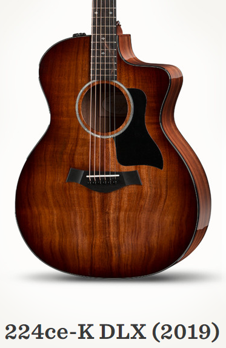
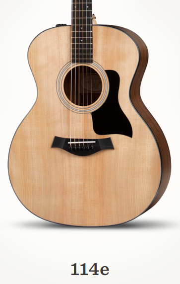
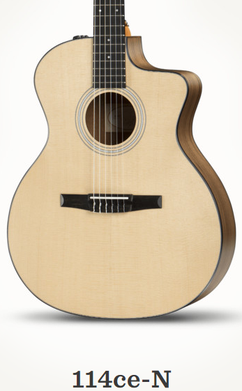
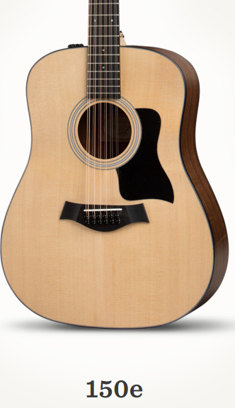

Este Taylor Dreadnought combina la parte posterior y los lados de nogal en capas con una tapa de abeto sólido,
bombeando un tono de voz completa que responde a los rasgueos y piquetes con bajos profundos, medios contundentes y notas agudas claras.
El ancho de la cejilla ligeramente más estrecho de 1-11 / 16 pulgadas hace que los acordes de barra sean más fáciles para las manos,
y con la pastilla incorporada Expression System 2 de Taylor, puede contar con un compañero de interpretación confiable que produce
un tono acústico amplificado natural. La guitarra incluye una funda Taylor ligera pero duradera para adaptarse a la vida en movimiento.
1.300 €
En stock
224cd-KDLX

A los fanáticos de la koa hawaiana les encantará la apariencia, la sensación y el sonido de este Gran Auditorio de koa.
Un borde sombreado eleva el atractivo vintage de la tapa de koa maciza, que se combina con la parte trasera y los lados de koa en capas,
mientras que un acabado brillante envuelve el cuerpo en un brillo intenso. La versatilidad musical del Grand Auditorium la convierte en
una excelente guitarra para todo uso tanto para rasguear como para tocar con los dedos, y la tapa de madera de koa igualará un ataque vivo
para producir una voz concentrada y lineal. Las características modernas amigables para el jugador incluyen un corte y la electrónica acústica
ES2 de Taylor. Entre los detalles distintivos se encuentran un rosetón de perlas de imitación de un solo anillo con un patrón de
"espina de pescado" entrelazado, ribetes negros, incrustaciones de diamantes pequeños de acrílico italiano y afinadores cromados.
La guitarra se envía en un estuche rígido Taylor Deluxe.
5.300 €
En stock
114 e

El 114e presenta nuestro popular estilo de carrocería Grand Auditorium, cuyas dimensiones físicas lo han convertido en una
opción popular por su atractiva versatilidad de rendimiento. La parte posterior y los lados de nogal en capas están rematados con una sólida
caja de resonancia de abeto Sitka, que en conjunto producen un tono claro y equilibrado con una proyección agradable y un enfoque de rango medio.
El ancho de la cejilla de 1-11 / 16 pulgadas es ligeramente más estrecho que el ancho estándar de 1-3 / 4 pulgadas de otras cuerdas de acero en la
Serie 300 y superiores, lo que facilita a los jugadores en desarrollo navegar por el diapasón. Y con la pastilla Expression System 2 incorporada
de Taylor, la guitarra está lista para enchufar cuando lo desee. La guitarra se envía en una bolsa de transporte ligera y duradera.
1.800 €
En stock
114ce-N

Es divertido explorar los sabores y texturas sónicos únicos de una guitarra con cuerdas de nailon. El Grand Auditorium 114ce-N
ofrece una opción atractiva, que combina la legendaria capacidad de interpretación de Taylor con un tono acústico claro y equilibrado. La guitarra
está encordada con cuerdas Pro-Arté Carbon Hard Tension de D'Addario, que cuentan con cuerdas agudas de carbono y cuerdas de bajo con núcleo
compuesto Dynacore. Estos combinan la musicalidad de una cuerda de tripa tradicional con una voz moderna más rica y fuerte que encantará a los músicos.
La parte posterior y los lados de nogal en capas de la guitarra se combinan con una tapa sólida de abeto Sitka, y las comodidades modernas
incluyen una electrónica ES-N recortada y a bordo, además de una práctica bolsa de transporte para una fácil portabilidad.
Independientemente de cómo planee usarlo, una guitarra con cuerdas de nailon será una adición inspiradora a su caja de herramientas acústicas.
2.800 €
En stock
150 e

Durante años, los cuellos elegantes y ultrajugables de Taylor han ayudado a definir una gran experiencia de 12 cuerdas.
El Dreadnought 150e de 12 cuerdas se adapta a la capacidad de interpretación y la claridad tonal de la firma en un paquete asequible, lo que hace
que una 12 cuerdas de calidad sea más accesible para los músicos con presupuesto limitado que buscan ampliar su paleta musical. La fuerte respuesta
de graves del cuerpo del Dreadnought se equilibra bien con el brillo nítido de una octava, produciendo un tono que es exuberante y articulado,
con mucho rango dinámico. Las características incluyen fondo y lados de nogal en capas, una tapa sólida de abeto Sitka, mástil de 1-7 / 8 pulgadas,
cuerpo con acabado mate, encuadernación y golpeador negros, y pastilla Taylor's Expression System 2 de sonido natural.